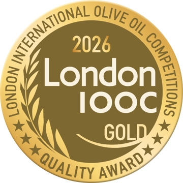
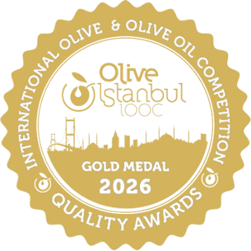
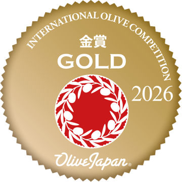

Soil Health
We owe the soil
In our groves we plant cover crops and return pruning residue to the soil. We use no synthetic fertilizers, and we limit irrigation to a drip system. Good oil comes from living soil; there is no shortcut.
Most olive oil is anonymous; where it came from gets lost. Every oil of ours has an address: our own groves in Ayvalık and, when needed, the growers beside us. Come on, let's trace it backwards together.
Our own grove, third generation. The early harvest extra virgin and single-grove reserve come from here. Olives are hand-picked and pressed the same day.
On the Trilye coast famous for its stone houses, an intense and fruity early harvest from old trees. A sibling with character to the Ayvalık profile.
A hillside parcel overlooking the sea. The special crops you sometimes find in Club boxes: small batches, big character.
The batch number on the label points to this entire chain. Most of our olives come from our own groves in Ayvalık, from Gemlik and Edremit variety trees; when a different variety is needed, we source it from regions we trust.
Early October, hand-picked. Olives never touch the ground; two separate sorting passes let only undamaged fruit through.
Washed with ozonated water, the olives are pressed the same day at 20-22°C in our polyphenol-focused Oleapenol press.
Polyphenol, acidity and peroxide values are measured at an independent laboratory.
Dark glass, nitrogen protection, harvest date and batch number on the label.
In our groves we plant cover crops and return pruning residue to the soil. We use no synthetic fertilizers, and we limit irrigation to a drip system. Good oil comes from living soil; there is no shortcut.

Gold · Quality Award

Gold Medal · Quality Awards

Gold · International Olive Competition